|
|
| brown seaweeds text index | photo index |
| Seaweeds > Division Phaeophyta |
| Sargassum
seaweed Sargassum sp.* Family Sargassaceae updated Oct 2015 Where seen? The largest of our brown seaweeds, this golden leafy seaweed with strange air bladders is commonly encountered on our Southern shores, but rarely on our Northern shores. It grows on the rocky shores as well as on coral rubble. |
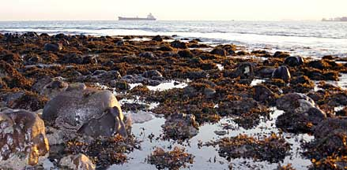 Sargassum bloom over a reef. Sisters Island, Sep 10 |
|
Features: Sargassum is the largest and most plant-like brown seaweed on our shores. The seaweed may have a more permanent (perennial) portion that is usually short and tough, stuck onto hard surfaces. Seasonally, Sargassum blooms, and long 'stems' to 1m or longer may grow rapidly. Attached to the stems are leaf-shaped blades that may be narrow, broad or very small (1-5cm long). There are also small round to oval air bladders (vesicles) interspersed among the 'leaves' are often mistaken for fruits, but seaweeds don't produce fruits like seagrasses do. The sargassum's air bladders help the seaweed stay afloat, closer to sunlight. Thus, long pieces often form floating rafts even after they have broken off from their holdfast. Sargassum may have reproductive structures that look like tiny fingers or other shapes. Some sargassum species can reproduce by producing new plants from horizontal creeping 'stems'. This is an adaptation to living on slippery rocks at the splash zone of rocky shores. According to AlgaeBase: there are more than 580 current Sargassum species. Sargassum forest: Sargassum seaweeds are often covered with other tiny seaweeds growing on the blades, while larger seaweeds may be entangled among it. In this tangled forest, all kinds of small creatures lurk, hiding from predator or prey, or both. Human uses: Sargassum seaweeds are eaten by people, and used fish bait in basket traps, animal feed, fertiliser, insect repellent. Various species are used as medicine for ailments ranging from children's fever, cholesterol problems, cleansing the blood, skin ailments. In the tropics, sargassum seaweeds are a significant source of alginates. They are also used as a component in animal feed and liquid plant food or plant biostimulants. Supplies come from harvested seaweeds, the seaweeds are not farmed. |
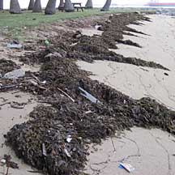 Large piles of sargassum washed ashore. Sisters Island, Jan 10 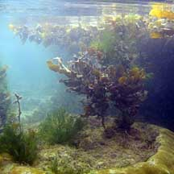 Air bladders keep the seaweed afloat near the water surface and sunlight. Terumbu Buran, Nov 10 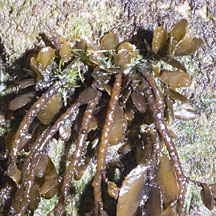 Growing from a hard surface. Sentosa, Nov 11 |
|
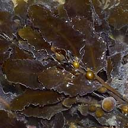 Big 'leaves'. |
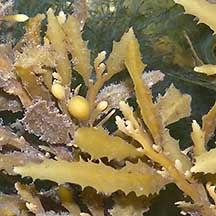 Medium 'leaves'. |
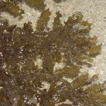 Small 'leaves'. |
|
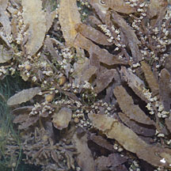 Fluffy bits reproductive structures? 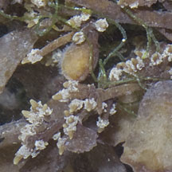 Sisters Island, Feb 06 |
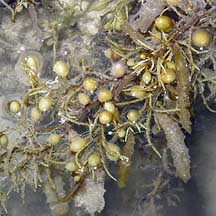 Long bits reproductive structures? 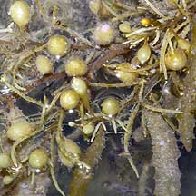 Labrador, Feb 06 |
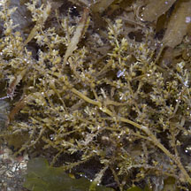 Long bits reproductive structures? 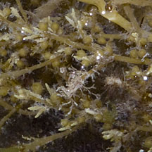 Labrador, Feb 06 |
|
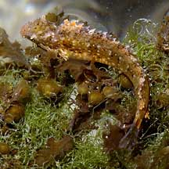 Tiny fish and entangled green seaweed on sargassum. Sentosa, May 04 |

|
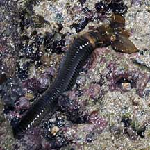 A Giant reef worm snatches a bunch of sargassum back into its lair. South Cyrene, Oct 10 |
*Seaweed species are difficult to positively identify without microscopic examination.
On this website, they are grouped by external features for convenience of display.
| Sargassum seaweeds on Singapore shores |
| Photos of Sargassum seaweeds for free download from wildsingapore flickr |
| Distribution in Singapore on this wildsingapore flickr map |
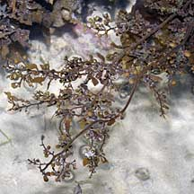 Pulau Senang, Aug 10 |
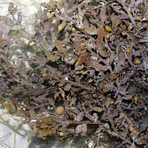 Pulau Senang, Aug 10 |
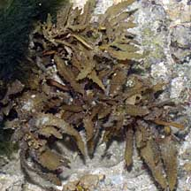 Terumbu Salu, Jan 10 |
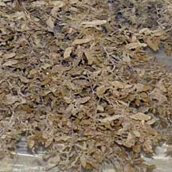 Terumbu Berkas, Jan 10 |
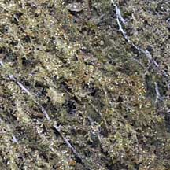 Terumbu Berkas, Jan 10 |
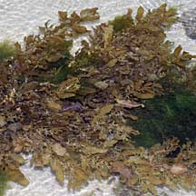 Terumbu Salu, Jan 10 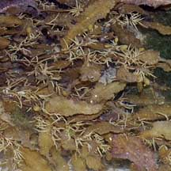 |
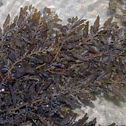 Pulau Salu, Aug 10 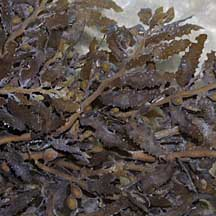 |
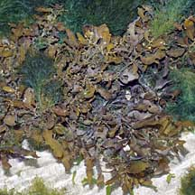 Pulau Biola, Dec 09 |
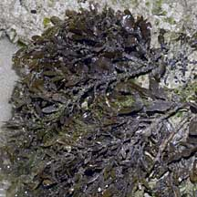 Pulau Pawai, Dec 09 |
| Sargassum
species recorded for Singapore Pham, M. N., H. T. W. Tan, S. Mitrovic & H. H. T. Yeo, 2011. A Checklist of the Algae of Singapore.
|
Links
|
|
|